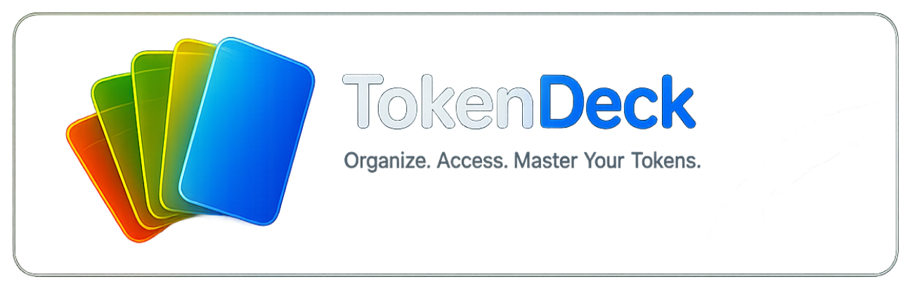

⌘
Bring Your Own Keys
Seamlessly integrate your free NVIDIA NIM or Hugging Face API keys. Run world-class AI models natively without being throttled by browser-based web UI limits.

SUPPORT & MODEL WORKSPACE
A native macOS and iOS client for NVIDIA NIM and Hugging Face models, with focused chats, saved projects, and a growing skills library.
THE WORKSPACE
The full original feature set remains here—now with a subtle colour-matched hover lift and glass glow on desktop.
Seamlessly integrate your free NVIDIA NIM or Hugging Face API keys. Run world-class AI models natively without being throttled by browser-based web UI limits.
Never lose track of a great idea. TokenDeck features true persistent memory, allowing you to pin important projects and save critical conversations for instant access later.
Expand your workflow by installing custom instructional skills. The skill library receives continuous updates, allowing you to tailor the AI's behavior to your specific development needs.
Securely connect to your Model Context Protocol (MCP) servers hosted on your local network. TokenDeck acts as a perfect UI bridge for your local contextual data streams while fully complying with platform security guidelines.
Buy once and use across both your Mac and iOS devices. Your projects, pins, and skills sync beautifully across your ecosystem.
SKILLS & PERSONAS
Discover instruction personas, prompt packs, and guides for connecting approved remote tools to a conversation.
MODEL COVERAGE
Capability labels make it easier to find a model for reasoning, coding, and fast chat.
Options include Llama, Qwen, Kimi, DeepSeek, GPT-OSS, Gemma, Mixtral, and Nemotron families.
Use the same workspace with routed GPT-OSS, Qwen, DeepSeek, GLM, Gemma, and Kimi models.
TESTFLIGHT & FEEDBACK
Request TestFlight access, share an idea, or submit a persona for the public skills library.
Ask for early access from the TokenDeck team. Keep email addresses out of public issues.
Describe the problem you want TokenDeck to solve and the model or workflow it affects.
Attach a Markdown or JSON persona to a GitHub issue. Submissions are reviewed before publishing.
API keys stay in the system Keychain. Local personas and remote connections stay scoped to the conversation where you choose to use them. TokenDeck does not download or execute local code for skills.